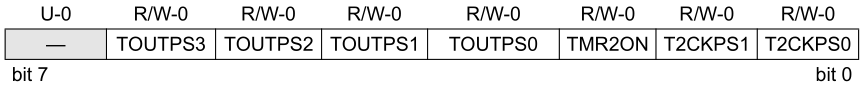

Episódio 16: Conhecendo a interrupção por coincidência em Timer2 (registrador TMR2, PR2 e T2CON de 8 bits) de 8 bits no PIC16F628A
Voltar ao índice
Voltar ao Episódio 15
Ir para Episódio 17
Neste episodio conheceremos o modulo Timer2 que é um temporizador de 8 bits com Prescaler e Postcaler e por um periodo definido pelo desenvolvedor.
As configurações começa pelo registrador T2CON (Timer2 Control Register) o qual é reponsavel pela configuração do Prescaler, Postcaler e se o Timer2 está ligado ou delsigado.
Os bits do registrador T2CON está disposto na Figura 16.1
|
Figura 16.1 - Bits do registrador T2CON
|
|

|
|
Fonte: -----------------------------------------
|
A configuração do Prescaler tem o mesmo proposito visto nos Timer0 (episodio 14) e Timer1 (episodio 15) e é dada pela Tabela 16.1
|
Tabela 16.1 - Relação do Prescaler para o Timer2
|
| T2CKPS1 |
T2CKPS0 |
VALOR PRESCALER |
| 0 |
0 |
1:1 |
| 0 |
1 |
1:4 |
| 1 |
x |
1:16 |
|
|
Fonte: ----------------------------------------
|
O bit TMR2CON de T2CON é responsavel por ligar (se setado - valor 1) ou desligar (se limpo - valor 0) enquanto que os bits TOUTPS<3:0> são responsaveis pela configuração do Postscaler conforme Tabela 16.2.
|
Tabela 16.2 - Relação do Postcaler para o Timer2
|
| TOUTPS3 |
TOUTPS2 |
TOUTPS1 |
TOUTPS0 |
VALOR POSTSCALER |
| 0 | 0 | 0 | 0 | 1:1 |
| 0 | 0 | 0 | 1 | 1:2 |
| 0 | 0 | 1 | 0 | 1:3 |
| 0 | 0 | 1 | 1 | 1:4 |
| 0 | 1 | 0 | 0 | 1:5 |
| 0 | 1 | 0 | 1 | 1:6 |
| 0 | 1 | 1 | 0 | 1:7 |
| 0 | 1 | 1 | 1 | 1:8 |
| 1 | 0 | 0 | 0 | 1:9 |
| 1 | 0 | 0 | 1 | 1:10 |
| 1 | 0 | 1 | 0 | 1:11 |
| 1 | 0 | 1 | 1 | 1:12 |
| 1 | 1 | 0 | 0 | 1:13 |
| 1 | 1 | 0 | 1 | 1:14 |
| 1 | 1 | 1 | 0 | 1:15 |
| 1 | 1 | 1 | 1 | 1:16 |
|
|
Fonte: Próprio autor (2021)
|
|
Código 16.1 - Código do exemplo de uso da interrupção do Timer2
|
; CONFIGURACOES INICIAS
; D:\Program Files (x86)\Microchip\MPLABX\v5.30\mpasmx\p16f628a.inc
; D:\Program Files (x86)\Microchip\xc8\v2.10\mpasmx\p16f628a.inc
#INCLUDE
LIST P=16F628A
; REGISTER 14-1: CONFIGURATION WORD REGISTER
; CP: Flash Program Memory Code Protection bit
; LVP: Low-Voltage Programming Enable bit
; BOREN: Brown-out Reset Enable bit
; MCLRE: RA5/MCLR/V PP Pin Function Select bit
; PWRTE: Power-up Timer Enable bit
; WDTE: Watchdog Timer Enable bit
; XT: Max 4 MHz crystal
__CONFIG _BODEN_ON & _MCLRE_ON & _LVP_OFF & _WDT_OFF & INTOSC & _CP_OFF & _PWRTE_ON
#DEFINE W_TEMP 0x20
#DEFINE STATUS_TEMP 0x21
ORG 0x00 ; TRATAMENTO DO RESET
GOTO INICIAPARAMETROS
ORG 0x04 ; TRATAMENTO DAS INTERRUPCOES
MOVWF W_TEMP
SWAPF STATUS, 0
MOVWF STATUS_TEMP
BTFSS PIR1, TMR2IF ; INTERRUPCAO DOS PERIFERICOS SECAO 8.0
GOTO SAIDA_INTERRUPCAO
BCF PIR1, TMR2IF
;
; LINHAS PARA TRATAMENTO DA INTERRUPCAO
;
SAIDA_INTERRUPCAO:
SWAPF STATUS_TEMP, 0
MOVWF STATUS
MOVF W_TEMP, 0
RETFIE
INICIAPARAMETROS:
BCF STATUS, RP1
BSF STATUS, RP0 ; SELECIONA O BANCO 1 DE MEMORIA
MOVLW B'10000000' ; CONFIGURACOES DO REGISTRADOR OPTION
; ; 1 - 'RBPU -> DESATIVA RESISTORES PULL-UP
; ; 0 - INTDEG -> INT. ATIV. BORDA DE DESCIDA RB0
; ; 0 - TOCS -> O CLOCK DO TIMER 0 EH INTERNO
; ; 0 - TOSE -> BORDA DE SUBIDA NO TIMER 0, RA4
; ;(0)- PSA -> PRESCALER ASSOCIADO AO TIMER 0
; ;(1) -> PRESCALER ASSOCIADO AO WDT
MOVWF OPTION_REG ; 0 - PS2,PS1,PS0 -> TIMER 0 COM RAZAO 1:1
MOVLW B'11111111' ; CONFIGURAÇÕES DO TRISA
; ; 0 - PINO RA7 COMO ENTRADA
; ; 0 - PINO RA6 COMO ENTRADA
; ; 0 - PINO RA5 COMO ENTRADA
; ; 1 - PINO RA4 COMO ENTRADA
; ; 1 - PINO RA3 COMO ENTRADA
; ; 1 - PINO RA2 COMO ENTRADA
; ; 1 - PINO RA1 COMO ENTRADA
; ; 1 - PINO RA0 COMO ENTRADA
MOVWF TRISA ; MODIFICA O COMPORTAMENTO DA PORTA
MOVLW B'11111111' ; CONFIGURAÇÕES DO TRISB
; ; 1 - PINO RB7 COMO ENTRADA
; ; 1 - PINO RB6 COMO ENTRADA
; ; 1 - PINO RB5 COMO ENTRADA
; ; 1 - PINO RB4 COMO ENTRADA
; ; 1 - PINO RB3 COMO ENTRADA
; ; 1 - PINO RB2 COMO ENTRADA
; ; 1 - PINO RB1 COMO ENTRADA
; ; 1 - PINO RB0 COMO ENTRADA
MOVWF TRISB ; MODIFICA O COMPORTAMENTO DA PORTB
MOVLW B'00000010' ; CONFIGURACOES REG. DE INTERRUPCAO DE PERIFERICOS
; ; 0 - EEIE -> DESATIVA INT. ESCRITA COMPLETA EEPROM
; ; 0 - CMIE -> DESATIVA INT. DO COMPARADOR
; ; 0 - RCIE -> DESATIVA INT. DO USART
; ; 0 - TXIE -> DESATIVA INT. DE TRASMISSAO DO USART
; ; 0 - -> Unimplemented: Read as ?0?
; ; 0 - CCP1IE -> DESATIVA INT. NO MODULO CCP1
; ; 1 - TMR2IE -> ATIVA INT. TMR2 PARA PR2
; ; 0 - TMR1IE -> DESATIVA INT POR OVERFLOW EM TMR1
MOVWF PIE1
MOVLW D'10' ; ATUALIZA O REGISTRADOR PR2 PARA LIMITE DE
MOVWF PR2 ; ESTOURO DO TIMER 2
BCF STATUS, RP1
BCF STATUS, RP0 ; SELECIONA O BANCO 0 DE MEMORIA
; CMCON - COMPARATOR CONFIGURATION REGISTER
; C2OUT -> ESTADO DO BIT DA SAIDA DO COMPARADOR 2
; C1OUT -> ESTADO DO BIT DA SAIDA DO COMPARADOR 1
; C2INV -> ESTADO INVERSO DO BIT DA SAIDA DO COMPARADOR 2
; C1INV -> ESTADO INVERSO DO BIT DA SAIDA DO COMPARADOR 1
; CIS -> COMUTA A ENTRADA DO COMPARADOR DEPENDENDO DA CONFIGURACAO
; CM<2:0> -> BITS DE CONFIGURACAO DOS MODOS DOS COMPARADOES
; 000 - Comparators Reset (POR Default Value)
; 111 - Comparators Off
; 100 - Two Independent Comparators
; 010 - Four Inputs Multiplexed to Two Comparators
; 011 - Two Common Reference Comparators
; 110 - Two Common Reference Comparators with Outputs
; 101 - One Independent Comparator
; 001 - Three Inputs Multiplexed to Two Comparators
MOVLW B'00000111' ; DEFINE O COMPORTAMENTO DOS COMPARADORES
MOVWF CMCON
MOVLW B'11000000' ; CONFIGURACOES DE INTERRUPCOES
; ; 1 - GIE -> ATIVA INT./CHAVE GERAL
; ; 1 - PEIE -> ATIVA INT. DOS PERIFERICOS
; ; 1 - T0IE -> ATIVA INT. NO TMR0
; ; 0 - INTE -> DESATIVA INT. NO RB0/INT
; ; 0 - RBIE -> DESATIVA INT. MUDANCA RB<7:4>
; ; 0 - T0IF -> FLAG DE TRANSBORDO DO TMR0
; ; 0 - INTF -> FLAG DE RESPOSTA INT. RB0/INT
MOVWF INTCON ; 0 - RBIF -> FLAG DE RESPOSTA INT EM RB<7:4>
MOVLW B'00001100' ; CONFIGURACOES DO TIMER 2
; ; 0 - NAO IMPLEMENTADO
; ; 0 - TOUTPS<3->: Timer2 Output Postscale Select bits
; ; 0 - TOUTPS<2>: Timer2 Output Postscale Select bits
; ; 0 - TOUTPS<1>: Timer2 Output Postscale Select bits
; ; 0 - TOUTPS<0>: Timer2 Output Postscale Select bits
; ; 0000 = 1:1 Postscale Value
; ; 0001 = 1:2 Postscale Value
; ; .
; ; .
; ; .
; ; 1111 = 1:16 Postscale
; ; 1 - TMR2ON: Timer2 On bit
; ; 1 = Timer2 is on
; ; 0 = Timer2 is off
; ; 0 - T2CKPS<1>: Timer2 Clock Prescale Select bits
; ; 0 - T2CKPS<0>: Timer2 Clock Prescale Select bits
; ; 00 = 1:1 Prescaler Value
; ; 01 = 1:4 Prescaler Value
; ; 1x = 1:16 Prescaler Value
MOVWF T2CON
; The TMR2 register value increments from 00h until it
; matches the PR2 register value and then resets to 00h
; on the next increment cycle.
CLRF TMR2
PROGRAMAPRINCIPAL:
NOP ; CICLO "1"
NOP ; CICLO "2"
NOP ; CICLO "3"
NOP ; CICLO "4"
NOP ; CICLO "5"
NOP ; CICLO "6"
NOP ; CICLO "7"
NOP ; CICLO "8"
NOP ; CICLO "9"
NOP ; CICLO "10"
NOP ; CICLO "11"
NOP ; CICLO "12"
NOP ; CICLO "13"
NOP ; CICLO "14"
NOP ; CICLO "15"
NOP ; CICLO "16"
NOP ; CICLO "17"
NOP ; CICLO "18"
NOP ; CICLO "19"
NOP ; CICLO "20"
NOP ; CICLO "20"
NOP ; CICLO "21"
NOP ; CICLO "22"
NOP ; CICLO "23"
NOP ; CICLO "24"
NOP ; CICLO "25"
NOP ; CICLO "26"
NOP ; CICLO "27"
NOP ; CICLO "28"
NOP ; CICLO "29"
NOP ; CICLO "30"
NOP ; CICLO "31"
NOP ; CICLO "32"
NOP ; CICLO "33"
NOP ; CICLO "34"
NOP ; CICLO "35"
NOP ; CICLO "36"
NOP ; CICLO "37"
NOP ; CICLO "38"
NOP ; CICLO "39"
NOP ; CICLO "40"
NOP ; CICLO "41"
NOP ; CICLO "42"
NOP ; CICLO "43"
NOP ; CICLO "44"
NOP ; CICLO "45"
NOP ; CICLO "46"
NOP ; CICLO "47"
NOP ; CICLO "48"
NOP ; CICLO "49"
NOP ; CICLO "50"
GOTO PROGRAMAPRINCIPAL
END
|
|
Fonte: Autor 2020
|
Voltar ao topo da página
Voltar ao Episódio 15
Ir para Episódio 17
Voltar ao índice